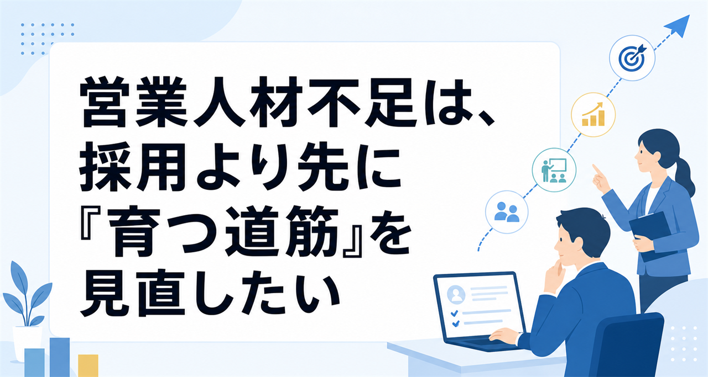

営業人材不足は、採用より先に「育つ道筋」を見直したい
みなさんこんにちは、Valorize AIの斎藤です。
「営業を増やしたいけれど、なかなか採用できない」
「採用できても、成果が出るまでに時間がかかる」
「結局、できる人に案件が集まり、若手や中途の育成まで手が回らない」
営業組織を見ていると、このような悩みを聞くことがあります。
もちろん、営業人材を採用しにくいこと自体は大きな課題です。ただ、採用だけを見ていると、もう一つの課題を見落としやすくなります。
それは、入った人が成果に近づくまでの道筋を、社内で説明できる状態になっているかどうかです。
今回は、営業人材不足を「採用できない」という話だけで終わらせず、営業育成の再現性という観点から考えてみます。
営業人材不足は、採用だけの問題では終わらない
営業人材が足りないとき、最初に思い浮かぶ対策は採用です。新しい人を採る、経験者を採る、採用チャネルを増やす。どれも大事な打ち手です。
ただ、営業組織の課題は「採れない」だけで終わりません。
採用できたとしても、入社後に成果へ近づくまでの時間が長い。異動してきた人が、何を見て動けばよいか分からない。若手が育つ前に、マネージャーやトップ営業が日々の案件対応に追われてしまう。
こうなると、営業人材不足は採用数の問題であると同時に、戦力化の問題になります。
中小機構の2024年度調査でも、人手不足に関わる課題として「人材確保・採用」だけでなく「人材育成」も主要な課題として挙げられています。これは営業職に限った調査ではありませんが、人を採るだけではなく、入った人をどう活躍につなげるかまで見なければならない、という構造は営業組織にも当てはまりやすいと感じます。
営業を増やす議論は、採用できるかだけでなく、入った人が成果に近づける状態を社内に作れているかまで見ないと、前に進みにくいのです。
育成がOJT任せになるのは、現場の意識不足だけではない
営業育成がうまく進まないとき、「マネージャーがもっと教えるべきだ」「トップ営業がノウハウを共有すべきだ」と考えたくなります。
しかし、現場を見ると、そう単純ではありません。
営業マネージャーは数字責任を持ちながら、案件相談、顧客対応、会議、採用、メンバーのフォローを同時に抱えています。トップ営業も、自分の案件で成果を出し続けることを求められています。その中で、育成のために十分な時間を確保するのは簡単ではありません。
2025年版中小企業白書でも、人材育成上の問題点として、育成に充てる時間的余裕の不足、指導する人材の不足、戦力化に時間がかかることなどが挙げられています。これも中小企業全般の話ですが、営業育成でも同じような制約は起きやすいはずです。
その結果、育成はどうしてもOJT任せになりがちです。
OJT自体が悪いわけではありません。むしろ、営業は現場で学ぶことが多い仕事です。ただし、教える内容が担当者ごとに変わり、何を見て、何を考え、どう動けばよいのかが言語化されていないと、学ぶ側は毎回手探りになります。
育成を個人の空き時間や経験則に任せたままでは、営業メンバーの立ち上がりは偶然に左右されやすくなります。
トップ営業のトークだけを共有しても、再現性は生まれにくい
営業育成の話になると、トップ営業のトークや商談パターンを共有しよう、という流れになることがあります。
これは大切です。成果を出している人の言葉や進め方には、学ぶべき点がたくさんあります。
ただ、トークだけを切り出しても、同じ成果が出るとは限りません。
なぜなら、トップ営業が成果を出している理由は、言い回しだけではないからです。顧客のどの発言に注目したのか。どの情報から課題を仮説立てたのか。どのタイミングで踏み込み、どのタイミングで引いたのか。そうした判断の流れがあって、初めてトークが機能しています。
SalesZineに掲載された営業ナレッジ調査では、トップ営業のトークや商談パターンが「明文化・仕組み化されていて誰でも使える」とする回答は限定的で、一部共有にとどまる、またはほとんど共有されていない状態が多いとされています。
ここで重要なのは、「共有していないから悪い」という話ではありません。問題は、成果につながった判断の過程が、学べる形で残っていないことです。
育成で本当に残すべきなのは、うまいトークそのものよりも、成果につながった判断の流れです。
顧客が求めているのは、説明がうまい営業だけではない
営業育成で何を教えるべきかも、少しずつ変わっています。
以前であれば、商品知識を覚え、よくある質問に答え、基本的な営業トークを身につけることが育成の中心になりやすかったかもしれません。もちろん、今でもそれらは必要です。
ただ、BtoBの営業では、顧客側もただ説明を聞きたいわけではありません。
自社の状況を理解してほしい。課題を一緒に整理してほしい。選択肢の違いを説明してほしい。導入後にどう改善していくかまで考えてほしい。
パーソル総合研究所の営業実態調査2025でも、BtoB顧客は営業担当者に対して、プロ視点での解決策提案や継続的な改善提案を期待していることが示されています。
もちろん、すべての営業に高度なアカウント営業を求める、という話ではありません。ただ、少なくとも「商品を説明できる」「決まった型を話せる」だけでは、顧客の期待に応えにくい場面が増えています。
これからの営業育成では、過去の成功トークを覚えるだけでなく、顧客の状況をどう捉え、どんな判断をするかまで学べる状態が必要になります。
営業活動を、育成に使える材料として残す
では、営業育成の再現性を高めるために、まず何を見るべきでしょうか。
私は、日々の営業活動を「育成に使える材料」として残せているかを見ることが大事だと思います。
たとえば、商談ログが単なる議事録で終わっていないか。顧客情報が担当者の頭の中だけに残っていないか。トップ営業が何を見て判断したのかが、後から読んでも分かる形になっているか。
こうした情報が残っていると、若手や中途メンバーは、ただ「先輩の商談に同席する」だけでなく、成果に近づく考え方を学びやすくなります。
大切なのは、すべてを完璧なマニュアルにすることではありません。営業は相手がいる仕事なので、完全に型化することはできません。
それでも、次のような問いを社内で持つだけで、育成の見え方は変わります。
- 成果が出た商談では、営業は顧客の何を見ていたのか
- 提案内容を決める前に、どの情報を確認していたのか
- うまくいかなかった商談では、どの判断材料が不足していたのか
- 新しく入った人が読んだときに、次に何を考えればよいか分かる記録になっているか
営業人材不足を採用だけで解こうとすると、どうしても「もっと良い人を採る」話に寄っていきます。
でも、営業組織の中に、学べる材料が残っていなければ、せっかく入った人も立ち上がりに時間がかかります。逆に、日々の営業活動から判断の流れを残せるようになると、営業育成は少しずつ個人任せから組織の力に変わっていきます。
営業育成の再現性は、特別な研修を増やす前に、日々の営業活動を学べる材料として残せているかを見直すところから始められます。
もし、自社の営業育成でも同じような課題を感じている場合は、まず現状を整理するところからお手伝いできますので、お気軽にご連絡ください！
https://valorize-ai.com/